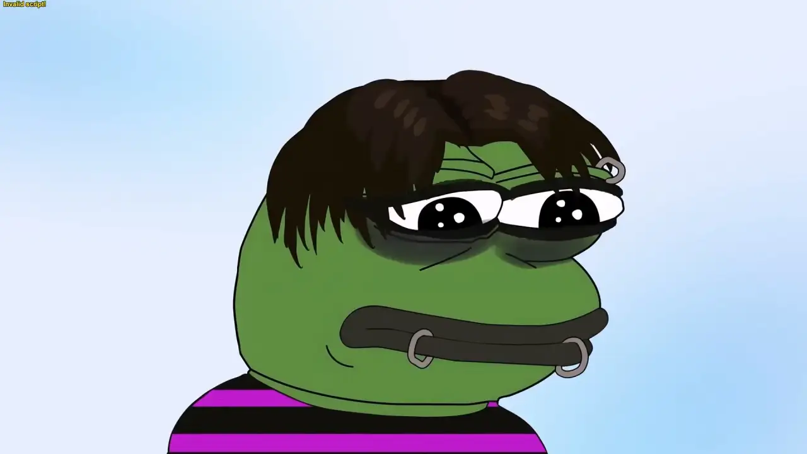
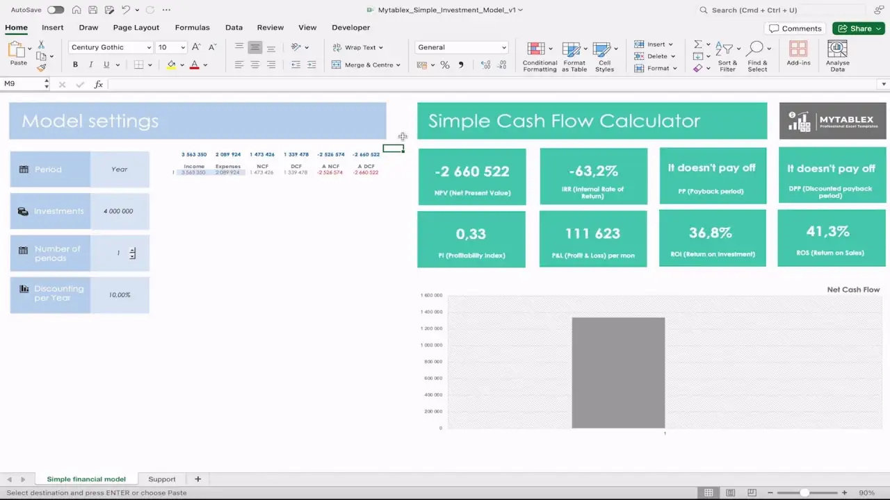
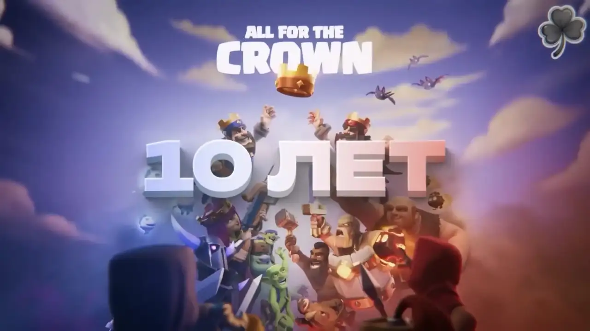
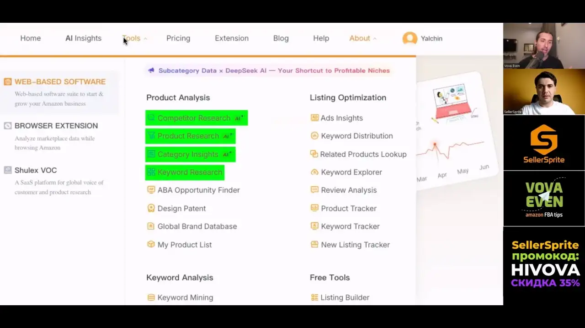
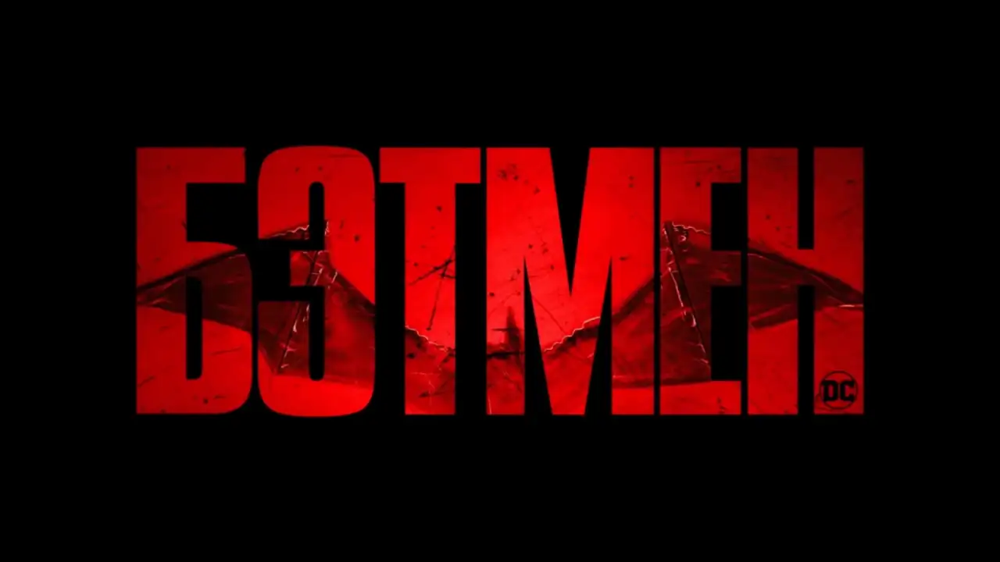
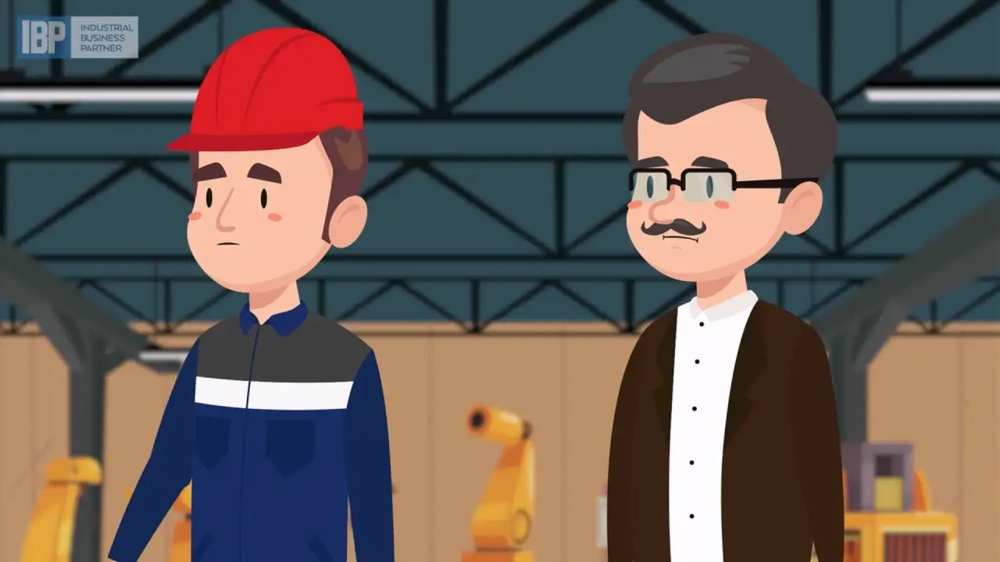
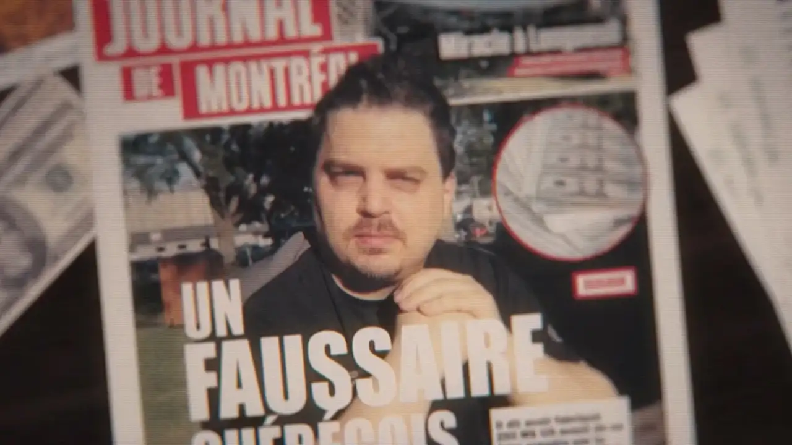
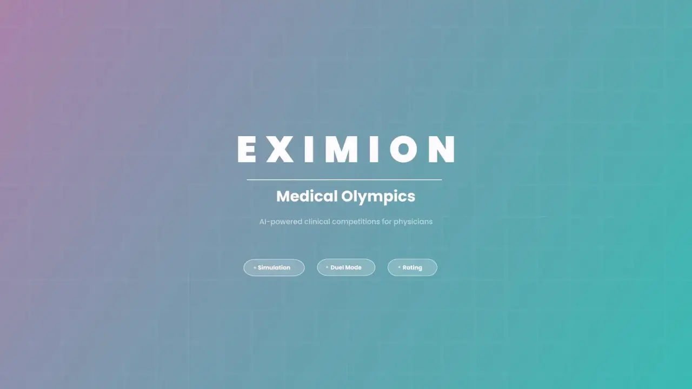
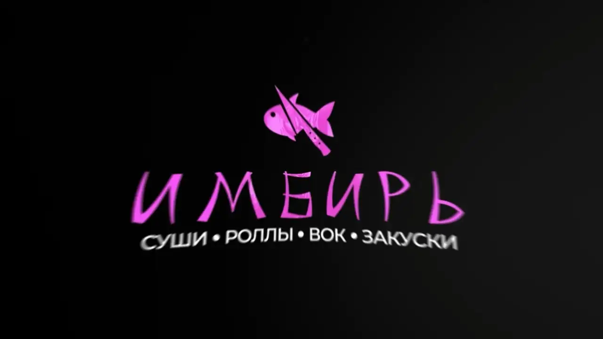
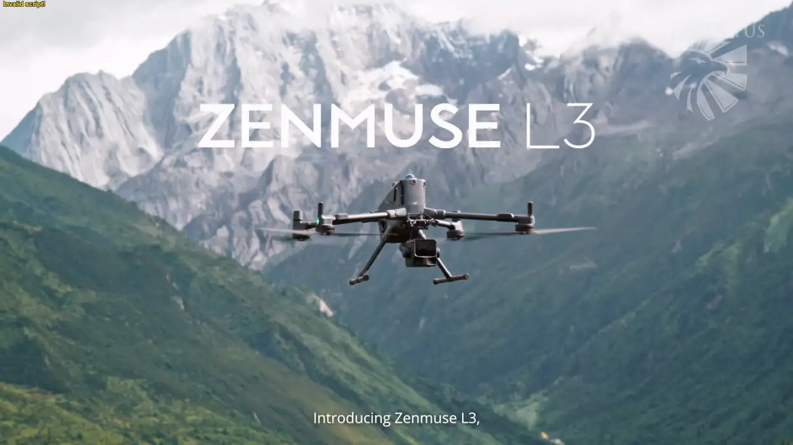

Озвучка текста и видео диктором онлайн
НУЖНАОЗВУЧКА?
Антон Малютин Диктор и актёр озвучивания
Ищете где заказать озвучку текста диктором онлайн на русском или английском языке? Профессиональная озвучка для рекламы, автоответчика, IVR, YouTube-роликов, инструкций, обучающих курсов и корпоративных презентаций. Перевод и закадровое озвучивание видео, дубляж. Живой голос без нейросетей.
Обо мне
Меня зовут Антон Малютин, я профессиональный диктор, актер озвучивания с шестилетним стажем. За все время моей карьеры я записал более 8500 озвучек на русском, английском языке для огромного числа разных проектов: реклама, автоответчики, IVR, корпоративный контент, презентации, видео для Youtube, спортивная аналитика и т.п. Помимо озвучки текстов выполняю переводы и переозвучку видеороликов с русского на английский и наоборот; аудио и видеомонтаж, а также запись голоса на камеру в формате "Говорящая голова". Голос записываю на профессиональной студийной технике в аккустически подготовленном помещении. Все заказы выполняю оперативно, качественно, как для себя. Если Вы ищете у кого заказать озвучку текста с душой, характером и уникальным тембром - я Ваш человек.
Чем я занимаюсь:
- Озвучка рекламных роликов, видеопрезентаций и корпоративного контента;
- Дубляж и закадровое озвучивание;
- Адаптация текста под видео и синхронизация с таймингом;
- Перевод и локализация материалов с учетом особенностей озвучки;
- Озвучка на русском и английском языках;
- Наложение субтитров, редактирование видеоряда (видеомонтаж);
Не уверены, подойдёт ли голос?
Напишите мне и я запишу бесплатный демо-фрагмент вашего текста. Так вы сразу поймёте, как будет звучать финальный результат.
Портфолио
Малая часть примеров работ: озвучка текста, видео на русском и английском языке. Не нашли подходящее? Напишите, сделаем бесплатное демо!

ДИКТОРСКАЯ ОЗВУЧКА ТЕКСТА (YOUTUBE ВИДЕО)
на русском

ДИКТОРСКАЯ ОЗВУЧКА ТЕКСТА (СКРИНКАСТ)
на английском

ДИКТОРСКАЯ ОЗВУЧКА ТЕКСТА (YOUTUBE ВИДЕО)
на русском
ДИКТОРСКАЯ ОЗВУЧКА ТЕКСТА (YOUTUBE ВИДЕО)
на английском

ПЕРЕВОД И ЗАКАДРОВОЕ ОЗВУЧИВАНИЕ ВИДЕО
на русском

ДУБЛЯЖ ВИДЕО (ТРЕЙЛЕР ФИЛЬМА)
на русском

ОЗВУЧКА ВИДЕОРОЛИКА (АНИМАЦИЯ)
на русском

ДИКТОРСКАЯ ОЗВУЧКА ТЕКСТА (YOUTUBE ВИДЕО)
на русском

ДИКТОРСКАЯ ОЗВУЧКА ТЕКСТА (РЕКЛАМА)
на английском
ДУБЛЯЖ ВИДЕО (РЕКЛАМА)
на русском

ДИКТОРСКАЯ ОЗВУЧКА ТЕКСТА (РЕКЛАМА)
на русском

ПЕРЕВОД И ЗАКАДРОВОЕ ОЗВУЧИВАНИЕ ВИДЕО
на русском
Стоимость
Калькулятор и таблица тарифов с минимальной стоимостью заказа. Если запутались, напишите мне!
Отзывы
Дикторская озвучка текста, перевод и озвучка видеороликов, реклмы, дубляж - реальные отзывы клиентов о совместной работе и результатах (персональные данные скрыты).
Спасибо большое за быстроту, и большой выбор вариантов озвучки.
Обращаюсь к Антону уже второй раз. С ним очень удобно работать: всё делает быстро и качественно. Рекомендую
Работаем не в первый раз, всё как всегда на высоте - качество, оперативность, общение. Обязательно обращусь ещё - и далеко не один раз!
Занимаюсь анимацией 2D и 3D и часто нуждаюсь в услугах диктора, работал с многими, но лучший это Антон! Быстро, качественно, по приемлемой цене- это про него)
Отличная работа, приятный голос, все понравилось. Рекомендую
Прекрасно перевел видео на английский, очень быстро, и по не кусающейся цене :)
Спасибо большое за оперативную работу! Озвучка получилась отличной — и русский, и английский звучат чётко, выразительно и профессионально. Особенно приятно, что ты так быстро справился. Всё подошло идеально под наш проект. Буду рада сотрудничать снова!
Антон делает очень качественно и быстро, учитывает контекст и может опираться на видеоряд!
Антон топовый чувак. Давно знаю его и всем советую.
Самый быстрый и простой способ решить проблему) Примеры посмотрел через бота, списался, через несколько часов уже всё готово. Без правок обошлось.
Заказал короткий текст на 350 символов. Выполненную работу получил уже через час. Максимально быстро и профессионально. 👍
Очень доволен сотрудничеством, рекомендую всем, кто ищет надёжного и ответственного специалиста по видеомонтажу и озвучке. Будем продолжать работать дальше!
Часто задаваемые вопросы
Отвечаю на главные вопросы о работе со мной: как заказать озвучку текста, видео, какие сроки, что входит в стоимость и как проходит процесс.
Работаю с текстами практически любой тематики - от рекламной озвучки до технических инструкций. Но есть несколько категорий, с которыми не сотрудничаю:
Политическая пропаганда и агитация - материалы, разжигающие рознь, агрессивная критика политических личностей.
Финансовые схемы - пирамиды, сомнительные MLM-проекты, обещания гарантированной сверхприбыли.
Контент 18+ - материалы откровенного или порнографического характера.
Дезинформация - лженаука, призывы к насилию, вредные для здоровья практики.
Нарушение авторских прав - озвучка текста без соответствующих прав на распространение.
Если сомневаетесь, подходит ли ваш проект - просто напишите, обсудим!
Работаю только по 100% предоплате - это стандартная практика в digital-сфере, где результат нельзя «вернуть» физически.
Способы оплаты:
- Перевод на карту
- СБП по номеру телефона
- Расчётный счёт (для юридических лиц)
- Другие варианты обсуждаются индивидуально
Почему предоплата? Все просто: нет денег, я ничего не должен.
Гарантия серьёзности. Предоплата показывает, что проект для вас важен. Я резервирую время в графике именно под вашу озвучку видео или рекламного ролика.
Фокус на качестве. Могу полностью сконцентрироваться на вашем заказе, а не переживать о пост-оплате.
Экономия времени. Не нужно напоминать о платежах, вести долгую переписку с бухгалтерией - работаю быстро и без лишней бюрократии.
Предоплата позволяет мне держать высокий темп работы и стабильное качество для всех заказчиков.
Стараюсь работать максимально быстро, чтобы вы получили готовую озвучку текста без лишнего ожидания.
Стандартные сроки: Обычно озвучка текстов, рекламных роликов и видео готова на следующий день после заказа (кроме выходных).
От чего зависят сроки?
Три главных фактора: объём текста, сложность проекта и моя текущая загрузка. Если это масштабная задача (аудиокнига, многочасовой курс), заранее согласуем реалистичные сроки.
Нужно срочно?
Есть опция «Срочный заказ» в калькуляторе - ваш проект переместится в приоритетную очередь. Напишите, обсудим возможность ускорения!
Всегда предсказуемо: После оценки проекта назову точную дату готовности, на которую можно рассчитывать.
Стоимсть озвучки текста рассчитывается исходя из количества слов (исключение - озвучка видео, где стоимость зависит от хронометража). Почему стоимость озвучки текста считается не по хронометражу? Здесь логика достаточно проста. Возьмем к примеру автомобиль: вы отправились на заправку, залили полный бак топлива. Вы заплатили за количество заправленных литров, а не за пробег. На полном баке вы можете проехать 500км по городу, а можете 700км по трассе. Точно также и в озвучке. Один и тот же текст можно озвучить по-разному. Точный хронометраж определить практически не возможно.
Я не работаю строго по одной цене, у меня несколько тарифов в зависимости от размера текста или видео, а также общего объема. К примеру одновременный заказ двух текстов по 10 минут будет дешевле, чем если заказывать их в разные дни по отдельности.
Для постоянных клиентов:
Ценю долгосрочное сотрудничество. Главный принцип лояльности - фиксация ставки. Если начали работать по определённой цене, стараюсь сохранить её для всех последующих проектов, даже если расценки для новых заказчиков выросли.
Это мой способ сказать «спасибо» за доверие.
Важно: Это касается текущего сотрудничества. Если вернётесь с новым проектом через год - условия обсуждаются по актуальному прайсу.
Найдём ли мы друг друга?
Работаю с теми, для кого важны качество, надёжность и соблюдение сроков. Если главный критерий - минимальная цена, мои услуги, вероятно, не подойдут. И это нормально - так мы оба экономим время!
Правильно подготовленный текст - залог быстрой работы и отличного результата. Вот что поможет:
Финальная версия. Присылайте утверждённый текст - так избежим лишних правок и переозвучек.
Числа словами. Все цифры, даты, проценты, суммы пишите словами. Например: «две тысячи двадцать пятый год» вместо «2025 г.», «сто рублей» вместо «100 руб.»
Сложные слова. Если есть редкие термины, названия компаний или фамилии - укажите ударения. Особенно важно для корпоративной озвучки.
Паузы и акценты. Нужны логические паузы или особый темп? Отметьте в скобках или разбейте текст на абзацы.
Почему это важно? Такая подготовка экономит время обеих сторон и помогает передать именно тот смысл и настроение, которые вы закладываете в текст.
Стремлюсь к идеальному результату, поэтому вопрос правок решается просто и прозрачно.
Бесплатные правки:
Оперативно и бесплатно исправляю любые ошибки по моей вине - оговорки, технический брак, несоответствие техзаданию.
Платные правки (переозвучка):
Если после записи вы решили изменить текст (переписать фразу, добавить или убрать абзац) - это новая задача. Стоимость переозвучки рассчитывается индивидуально.
Почему так? Это справедливо для обеих сторон - защищает моё время и даёт вам возможность внести нужные коррективы.
Как избежать лишних расходов?
Внимательно вычитайте и утвердите финальный текст до начала записи. Всегда на связи, чтобы помочь определиться и избежать недопонимания!
Да! При заказе озвучки видео вы получаете не просто аудиофайл, а полностью готовый к публикации ролик с наложенной озвучкой.
Что входит в результат:
Синхронизация. Подгоняю озвучку текста под тайминг видео.
Профессиональная обработка. Шумоподавление, нормализация громкости.
Сведение. Аккуратно смешиваю голос с исходными звуками видео для сбалансированного результата.
А что с музыкой?
Если есть музыка: Пришлите файл - бесплатно наложу на видео и отрегулирую громкость.
Если музыки нет: Смогу подобрать музыку из открытых источников.
О дубляже:
Полная переозвучка видео с заглушением оригинальной речи - сложная техническая задача. Качественно вырезать исходную дорожку, сохранив фоны и музыку, часто невозможно. Такие проекты обсуждаются индивидуально.
Итог: Получаете готовый видеофайл, который можно сразу публиковать. Ничего монтировать самостоятельно не придётся!
Да, базовая обработка звука всегда входит в стоимость озвучки. Никогда не отдаю сырые записи - мой приоритет, чтобы вы получили готовый к использованию чистый звук.
Что включает обработка:
Шумоподавление - убираю фоновый гул и шипение.
Компрессия - выравниваю громкость, чтобы звук был чётким и ровным.
Нормализация - привожу аудио к комфортному стандартному уровню.
А если нужна сухая запись (dry version)?
По запросу могу предоставить необработанную дорожку, но стоимость от этого не меняется. Обработка - это финальный штрих, гарантирующий качество готового продукта.
Вы платите за готовый результат, а не за полуфабрикат.
Для меня перевод - не механическая замена слов. Это творческая работа, цель которой - сделать текст живым и естественным для вашей аудитории.
Как работаю над переводом:
1. Черновик. Использую современные инструменты (включая нейросети) для первого варианта - это ускоряет работу.
2. Глубокая редактура. Ключевой этап. Перерабатываю текст, исправляю кальки с английского, неестественные обороты. Текст должен звучать так, будто изначально написан на русском.
3. Адаптация. Учитываю культурные особенности, целевую аудиторию и цель текста. Техническая инструкция и рекламный слоган требуют разного подхода.
4. Проверка терминологии. Узкоспециальные термины проверяю в словарях и авторитетных источниках.
5. Финальная вычитка. Ещё раз проверяю грамотность, стиль и точность передачи смысла.
Мои гарантии:
Лично отвечаю за каждый проект от начала до конца, не передаю работу на сторону. Всегда открыт к правкам - если что-то спорно, обсудим и исправим.
Работаю на профессиональной студийной аппаратуре - гарантирую чистый, глубокий звук без помех.
Моё оборудование:
Микрофон: Neumann TLM 103 - эталонный студийный конденсаторный микрофон, который ценят за безупречно чёткий и детализированный звук.
Аудиоинтерфейс: Presonus Studio 26C - чистое усиление сигнала без шумов.
Софт: Запись и сведение в профессиональной DAW REAPER.
Обработка: Использую топовые плагины от Waves, iZotope, Overloud.
Важно: Все мои работы - это живой человеческий голос. Не использую искусственный интеллект и генеративные голосовые модели. Вы получаете аудио с настоящей энергией и актёрской работой.
Да, официально зарегистрирован как самозанятый и работаю в рамках законодательства РФ. Полная юридическая чистота и прозрачность.
Для всех клиентов:
Электронный чек после оплаты - официальный документ для ФНС.
Для юридических лиц (ИП, ООО):
Счёт на оплату по запросу для бухгалтерии.
Что нужно для документов:
Полное наименование организации и ИНН.
Все документы предоставляю оперативно и без сложностей. Работаю как с физическими, так и юридическими лицами.
Контакты
Готовы обсудить проект? Напишите в любой удобный мессенджер!